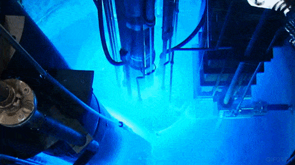

My Research
As someone who is pursuing a Ph.D., it would be unusual if I wasn't involved in some sort of academic research. This page offers some information about that.
Current Projects
First Research Experience
I have always been interested in being some sort of research scientist. I did my first research in a biology lab in high school. My uncle (Dr. Mark Watson) works in a research lab related to cancer at Wash U in St. Louis (my hometown). In the summer before my senior year (summer 2017), he let me shadow the lab and paid me to be there, which was nice of him because I contributed absolutely nothing to the lab. I was really bored because I wasn't involved in the research, but I learned about the general structure of labs.
MURR
In the summer of 2018 before my freshman year at Mizzou, I had the opportunity to do research at MURR, a research reactor near Mizzou's campus, with Dr. Richard Ferrieri. My responsibilities included a poster presentation and an abstract, the latter of which can be found here. This summer, I learned how independent research really is.
I also got to see Cherenkov radiation live in action. I could not take a picture but this is pretty much what it looked like.

Thin Film Group
In my first semester of college, I had the opportunity to work in another lab run by Dr. Matthias Young. Dr. Young was a new professor at the time and he was building an atomic layer deposition (ALD) reactor, so my responsibilities included helping out with that. The final product can be found here on their website if you scroll down a bit.
Cybersecurity Lab, Ph.D., & SFS
In the fall of 2020 I knew I wanted to try research in computer science, so I reached out to a professor for a class on databases I was taking at the time, Dr. Dan Lin. Dr. Lin accepted me into her cybersecurity lab and after a few months of watching the work presented by the graduate students at our weekly lab meetings, working on small tasks of my own, and being a TA for other classes (which I talk about in the teaching page), I knew I wanted to continue CS research and get my Ph.D.
Dr. Lin and I talked about my interest in graduate school, and she helped me apply to a program to fund my Ph.D. The program is funded by the National Science Foundation (NSF) and the goal of the program is to fund students interested in cybersecurity to pursue advanced degrees. It's called the Scholarship for Service (SFS), and more information can be found here. Dr. Lin is the PI of the program at Mizzou, and since she was the one who told me to apply I knew I had a solid chance at being selected. I was accepted, and I will be using the funding to pursue a Ph.D. with Dr. Lin at Mizzou! I am really excited to start working in the lab in person because so much of my time in college has been spent online because of the pandemic; I feel like I haven't been able to fully experience Mizzou because of everything going online.
In the lab, I am working on a project that combines cybersecurity and machine learning for fake voice detection. You can see more details about this under the projects section at the top of this page.